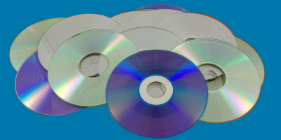

OPTICAL

Examples: CDs, DVDs, Blu-ray
Lifespan: 30–100 years, which varies by disc type
ROM/R — Up to 100 years
RW — Up to 30 years
Each disc surface contains microscopic light and dark spots that are read by a laser in a disc drive. There are different types of discs: factory-pressed ROM (read-only memory) discs, CD-R and DVD-R discs you could burn on your own but not edit once burned, and CD-RWs that you could burn at home and re-write as needed.
All optical media storage types are sensitive to scratches, humidity, and UV light. For example, the optimal 100 year lifespan listed above for ROM discs only applies to those kept in ideal storage conditions: climate controlled environments that are protected from physical damage and UV light exposure.